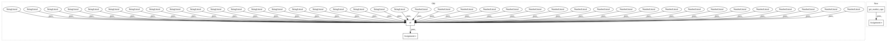

a72a38b3f84d2ff63a513a119205a5647edc9320,tests/test_black_litterman.py,,test_bl_tau,#,440
Before Change
)
delta = black_litterman.market_implied_risk_aversion(prices)
mcaps = {
"GOOG": 927e9,
"AAPL": 1.19e12,
"FB": 574e9,
"BABA": 533e9,
"AMZN": 867e9,
"GE": 96e9,
"AMD": 43e9,
"WMT": 339e9,
"BAC": 301e9,
"GM": 51e9,
"T": 61e9,
"UAA": 78e9,
"SHLD": 0,
"XOM": 295e9,
"RRC": 1e9,
"BBY": 22e9,
"MA": 288e9,
"PFE": 212e9,
"JPM": 422e9,
"SBUX": 102e9,
}
prior = black_litterman.market_implied_prior_returns(mcaps, delta, S)
viewdict = {"GOOG": 0.40, "AAPL": -0.30, "FB": 0.30, "BABA": 0}
After Change
delta = black_litterman.market_implied_risk_aversion(prices)
mcaps = get_market_caps()
prior = black_litterman.market_implied_prior_returns(mcaps, delta, S)
viewdict = {"GOOG": 0.40, "AAPL": -0.30, "FB": 0.30, "BABA": 0}
In pattern: SUPERPATTERN
Frequency: 5
Non-data size: 4
Instances
Project Name: robertmartin8/PyPortfolioOpt
Commit Name: a72a38b3f84d2ff63a513a119205a5647edc9320
Time: 2020-04-28
Author: martin.robertandrew@gmail.com
File Name: tests/test_black_litterman.py
Class Name:
Method Name: test_bl_tau
Project Name: robertmartin8/PyPortfolioOpt
Commit Name: a72a38b3f84d2ff63a513a119205a5647edc9320
Time: 2020-04-28
Author: martin.robertandrew@gmail.com
File Name: tests/test_black_litterman.py
Class Name:
Method Name: test_market_implied_prior
Project Name: robertmartin8/PyPortfolioOpt
Commit Name: a72a38b3f84d2ff63a513a119205a5647edc9320
Time: 2020-04-28
Author: martin.robertandrew@gmail.com
File Name: tests/test_black_litterman.py
Class Name:
Method Name: test_bl_market_automatic
Project Name: robertmartin8/PyPortfolioOpt
Commit Name: a72a38b3f84d2ff63a513a119205a5647edc9320
Time: 2020-04-28
Author: martin.robertandrew@gmail.com
File Name: tests/test_black_litterman.py
Class Name:
Method Name: test_bl_market_prior
Project Name: robertmartin8/PyPortfolioOpt
Commit Name: a72a38b3f84d2ff63a513a119205a5647edc9320
Time: 2020-04-28
Author: martin.robertandrew@gmail.com
File Name: tests/test_black_litterman.py
Class Name:
Method Name: test_idzorek_with_priors